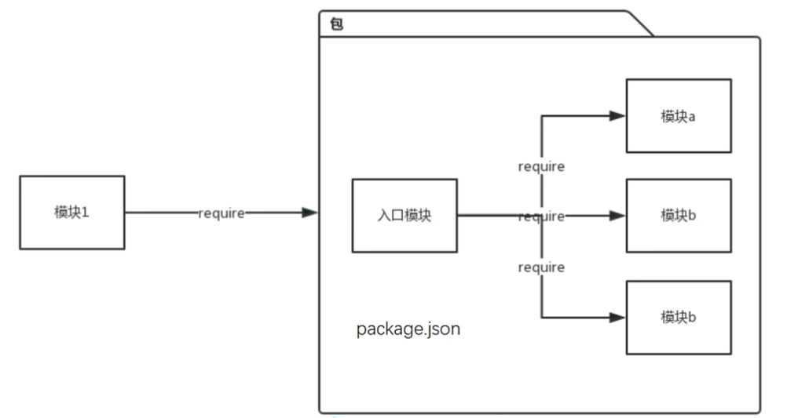

P1：
1.node —inspect，调试
P2 :
1.定位模块：
- 1）取当前目录下的node_modules为查找路径
- 2）首先尝试把模块标识符当作是文件名处理
- 3）把路径当做目录（包）来处理
- 4）去上一级node_modules重复上面2，3步骤，直到到了根目录
2.模块缓存
- 模块首次加载后就缓存在require.cache
- 清理缓存：
Object.keys(require.cache).forEach(function(key){
delete require.cache[key];
});
3.npm包

4.package.json包含的内容
- name，包名
- descriptions，包描述
- version，版本号
- main，入口文件
- scripts，配置脚本命令
- dependencies，包依赖
- devDependencies，开发时期需要的包依赖
P3：
1.事件：键盘、请求、文件读取完成
2.事件循环：事件队列，先进先出处理

3.循环模型

4.每次循环称为一个tick
5.Node.js：基于事件驱动模型的WEB服务器
6.事件驱动模型服务器：对CPU和I/O的利用率更高

7.Node.js服务器特点
- 高并发连接
- 适合I/O密集型任务
- 不适合CPU密集型计算服务
8.发布订阅模式
const EventEmitter = require('events')
class MyEmitter extends EventEmitter{}
const myEmitter = new MyEmitter();
//发布者
myEmitter.on('event',()=>{
console.log('触发了一个事件');
});
//订阅者
myEmitter.emit('event');
9.发布者负责触发（发布）事件，订阅者在监听（订阅）事件之后，当事件触发，则执行响应的回调方法
10.回调地狱：回调多层嵌套
11：async/await：Promise语法糖
- ES7
- await后面必须跟Promise对象，否则相当于没写
- async封装成一个Promise对象，声明方法是一个异步方法
P4：
1.npm install mysql —save
2.Sequelize库，ORM库
3.频繁的创建和释放连接会有性能问题
4.资源池的优点
- 资源重用
- 更快的响应速度
- 统一的连接管理，避免数据库连接泄漏
- 更好的资源分配
P5：
1.创建子进程
- child_process.spawn
- child_process.exec
- child_process.execFile
- child_process.fork
2.spawn：默认是以管道流形式创建
3.exec：不是以管道流的形式，先缓存在内存，当回调执行的时候父进程才获取到，适合数据输出比较少
4.进程间通信：
- 通过IPC传递消息
- 仅能传递字符串，对象会被序列化
5.多进程集群：采用master/worker模式
6.轮叫调度：nodejs默认采用抢占策略，轮叫调度主进程分配
7.Cluster模块
P6：
1.killall node
2.mocha单元测试框架
P7：
1.pm2:
- pm2 start bin/www -i max —watch
- 多进程 最大cpu 监控修改（测试环境用）
- pm2 ecosystem：远程部署配置文件
- Pm2 deploy production update 更新代码
2.请求页面及解析html
- request-promise
- cheerio
3.桌面应用：electron